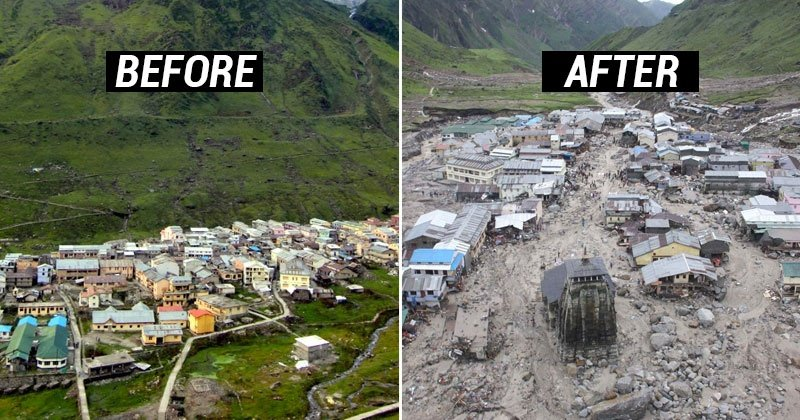

'Kedarnath Floods 2013 : What Led to The Disaster ?'
According to the website of the Uttarakhand Jal Vidyut Nigam Limited,45 hydropower projects with a total capacity of 3,164 MW are operational in in the state, and around 199 big and small projects have been proposed or under way in the state. In the Alaknanda Bhagirathi basin alone, 69 hydropower projects with a total capacity of 9,000 MW are under way, according to the high level inter-ministerial group (IMG) formed by the Union ministry of environment and forests to consider matters relating to environmental flows and hydropower projects on the Ganga and its tributaries.
The report was prepared in April 2013. These projects would modify the key tributaries through diversions to tunnels or reservoirs. As per the report, implementation of all 69 projects would affect 81 per cent of the Bhagirathi and 65 per cent of the Alaknanda.
With The exploitation of rivers through dams and the resulting challenges have been in Himanshu Thakkar's focus for some time now. He has carried out an in-depth study of construction activities in several river valleys, including the Narmada, Alaknanda and Bhagirathi. In a report published by the South Asia Network for Dams, Rivers and Peoples (SANDRP), Thakkar demystifies several issues and highlights the unethical practices of several construction companies and the growing avarice of all stakeholders involved
The following demographs demonstrates the flash floods in the Kedarnath Valley:
The following image shows the picture of the Kedarnath Valley before and after the flash floods:

A Brief Description of What Happened
On June 16 and 17, a few kilometres from the Jaypee hydro power project in Joshimath, the area was completely ravaged in the disaster. The villagers allege that the project staff knowingly ignored all the danger signals. Two separate cases were filed by activists against the projects of the Jaypee and GVK groups in the National Green Tribunal, the apex court to hear the environment disputes and grievances.The water level started rising in the Vishnuprayag project reservoir since June 13 itself. The workers and officials at the dam site should have been aware of the risk that the villages and their inhabitants were exposed to. Villagers claim that they had asked the company staff to open the dam gates to allow water to flow from under the barrage, but either the company employees did not understand the gravity of the situation or merely ignored the advice.
The locals maintain that the project staff did not expect the flood to take on such monstrous proportions and perhaps saw this as a business opportunity to generate more power. In the meanwhile, the water continued to rise and an almost three kilometre long lake was formed.
This reservoir proved to be very dangerous for villages in its vicinity. The water had breached the walls of the reservoir. The barrage is equipped with an automatic hydraulic system to regulate the volume of water and to ensure that the gates open automatically when the level exceeds a certain point. But the failure of this system raised an important question: after constructing such huge dams in an area as vulnerable as this, can the entire safety mechanism be completely dependent on technology alone
With the water rising continuously in the dam, all the tributaries in the region, big and small, were swollen. One of these, Khairo Ganga, had taken on the proportions of a full-fledged river and, along with its water, a huge quantity of sand and debris got lodged in the barrage. As a result, one of the walls of the barrage gave way.
Alaknanda, flowing several feet above normal, started cutting into the national highway and a massive chunk of the road fell into the river. A few kilometres away, two small towns, Pandukeshwar and Govindghat, saw maximum damage. The people of Pandukeshwar lost their homes, cattle, and other belongings, while Govindghat was completely destroyed. There used to be at least fifty shops and many hotels in Govindghat most of these boasted of 30 to 40 rooms.
The ruthless flood took whatever came in its way, leaving behind only huge boulders, sand and debris. The Govindghat parking lot, that could at one time accommodate hundreds of buses, motorcycles, cars and trucks, had vanished off the face of the earth. The residents of Pandukeshwar and Govindghat were of the view that the damage could have been minimised had the staff of the Vishnuprayag power project behaved responsibly. The most serious allegation was that despite the rising water level, the project staff did not open the reservoir gates to release the water. Later, when villagers asked for the gates of the barrage to be opened, the company ignored them. The locals' anger seemed justified because, despite being aware of the risk involved, the staff of Jaypee didn"t alert the villagers and did nothing to take pre-emptive measures.
But it's not just one project alone that acted irresponsibly. After the disaster, many other projects also came under scanner, one of these being the dam being built in Srinagar, by the GVK group. Media reports say that on the evening of 16 June (2013), the dam operator of GVK group closed the gate to fill up the reservoir. Within a few hours, when water and silt began accumulating in dangerously large amounts, the operators realized that their project was in the danger of being harmed. Without any concern for the people living downstream, they opened all the gates at once, which resulted in large-scale destruction down the river in the town of Srinagar. The Ravi Chopra committee, appointed on Supreme Court orders, also clearly stated that the Srinagar project was responsible for the devastation seen downstream.
Original Credits: Article from THE DAILYO Dated : June 17, 2016
 by Ananay Gupta © All Rights Reserved 2021
by Ananay Gupta © All Rights Reserved 2021